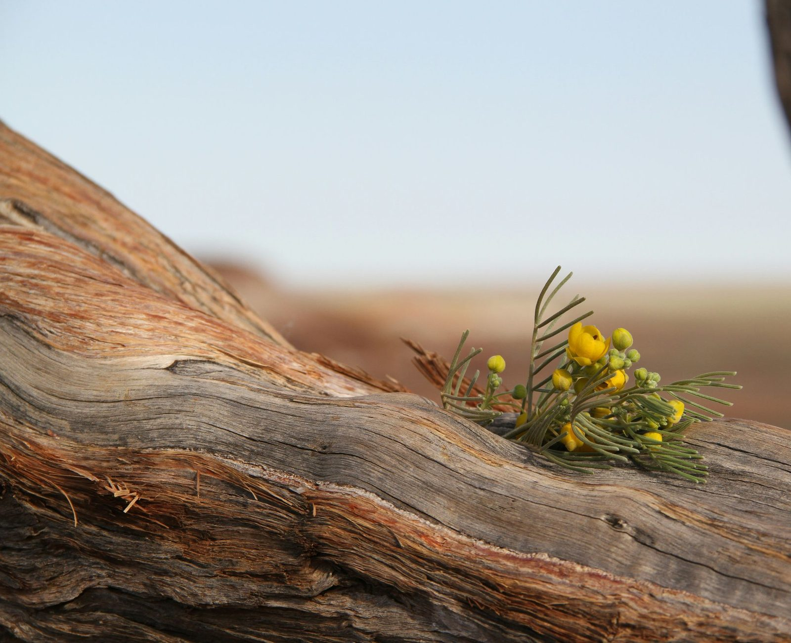
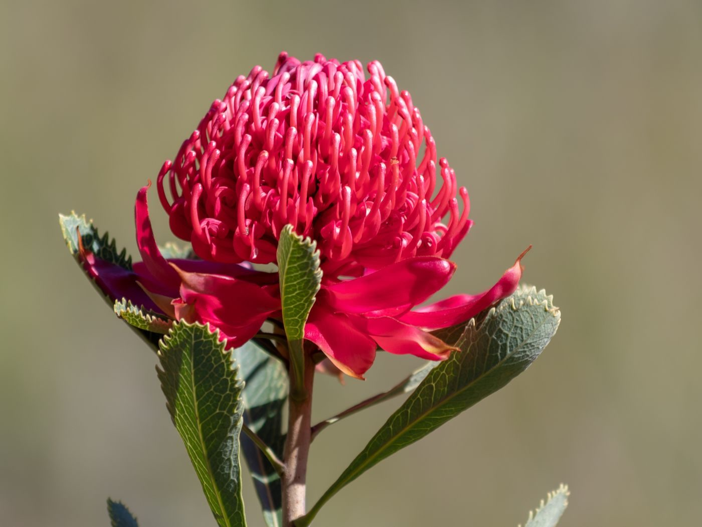
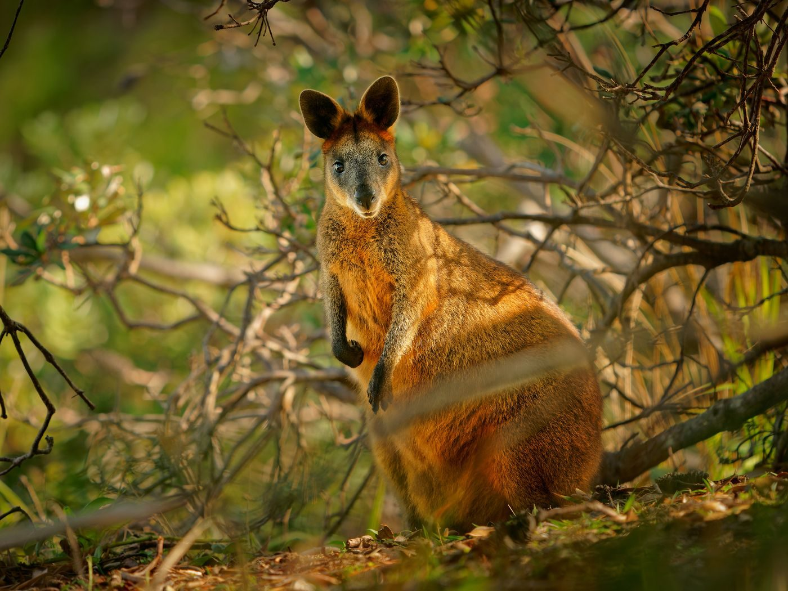
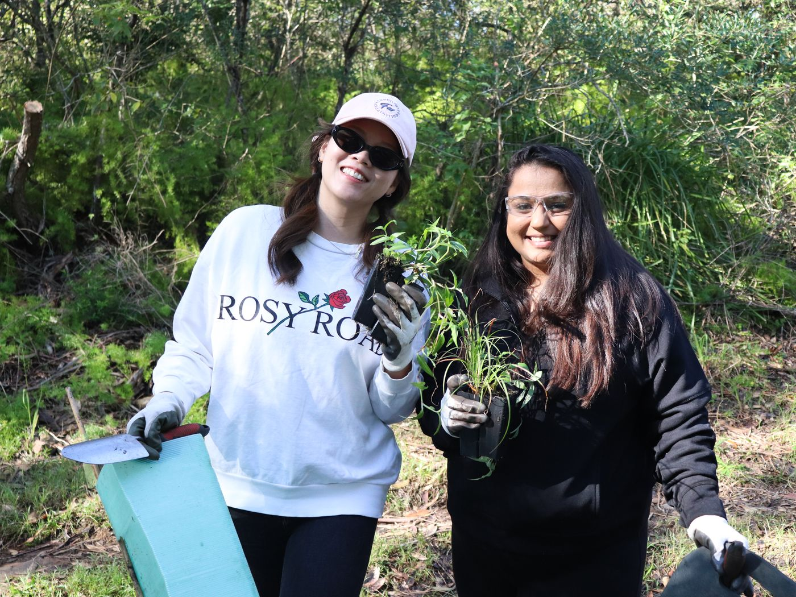
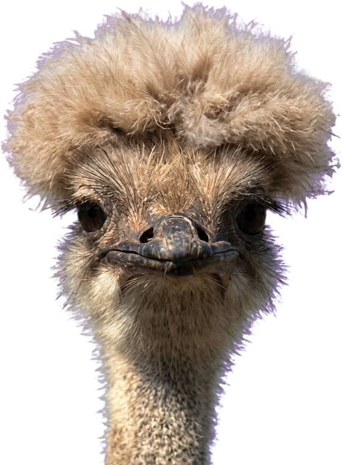

Every way to stand
with natural Australia.
However you want to help, there is a way that fits. Four ways to give, four ways to give time and influence. Choose yours.
Your giving, put where it works hardest.
Whichever of the four you choose, your gift turns into something specific: land bought outright, seedlings coming on in a nursery, a species handed a little more time.

Donate once
A single gift, toward replanting degraded Country and habitat, funding recovery science, and acquiring land for national park status. You choose the amount; we make it count.
Donations of $2 or more are tax deductible, and your receipt arrives by email straight away.
- Goes to work across all three pillars
- Tax deductible from $2
- Instant receipt for tax time

Become a Habitat Hero
Recovery is slow, patient work measured in seasons. Monthly giving is what lets us commit to it: rangers stay funded, monitoring keeps running, seedlings get watered in year two, not just planted in year one.
Habitat Heroes get updates from the field showing exactly what their support is doing.
- Steady funding for long-term projects
- Field updates from the projects you power
- Change or pause anytime

Give a Tree
Skip the socks. A native tree planted in a recovering landscape, with a certificate sent to the person you love. It cleans air, shelters wildlife and outlives us all.
Perfect for birthdays, memorials and Christmas, and popular with businesses gifting clients something that means something.
- A real tree in a real FNPW project site
- Personalised certificate for your recipient
- Bulk gifting for business

Leave a gift in your will
After family and friends are looked after, a gift in your will protects what you love about this country beyond your lifetime. Gifts in wills have secured some of the most significant land in our 55-year history.
We can provide the exact wording your solicitor needs; every conversation is confidential and without obligation.
- Land protected forever
- Suggested wording for your solicitor
- Confidential, no-obligation conversations
Your time, worth every bit as much.
You can spend a weekend with your hands in the dirt, bring your business in behind the mission, or get your whole workplace giving together. There are four ways in, and we lean on all of them.
Corporate volunteering
Bring your team out for a planting or restoration day with our project partners. Tools, guidance and safety covered; most teams call it the best team day they have done.
→02Workplace giving
Small regular gifts from pre-tax pay, often matched dollar for dollar by employers. Five minutes with payroll, habitat every payday.
→03Fundraise for us
Run, bake, climb or host in support of FNPW. We supply logos, photos, impact stats and encouragement.
→04Donate land
Land with conservation value can become part of the protected estate, safe forever. Every conversation is confidential.
→Funding conservation at scale for a government agency, foundation or business? Partner with us
Australia looks better with a full bush.
Let’s not beat around the bush any longer. Australia’s wilderness and wildlife need our help.
